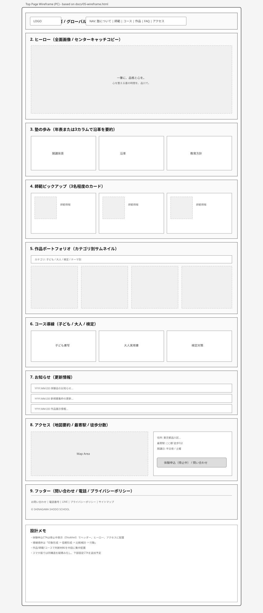
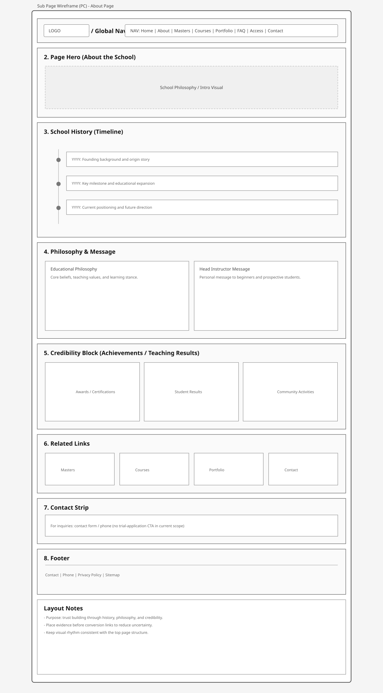
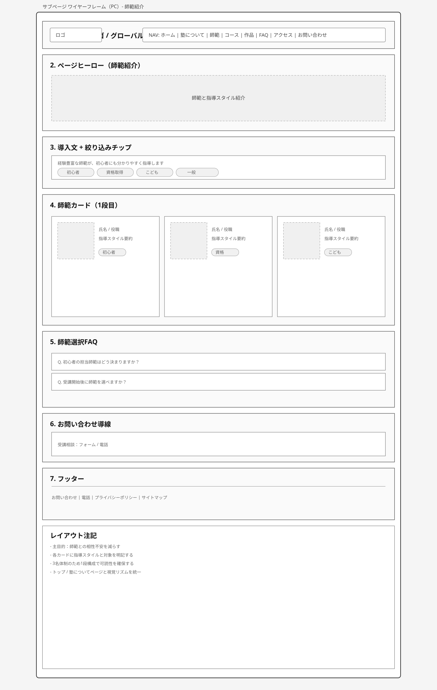
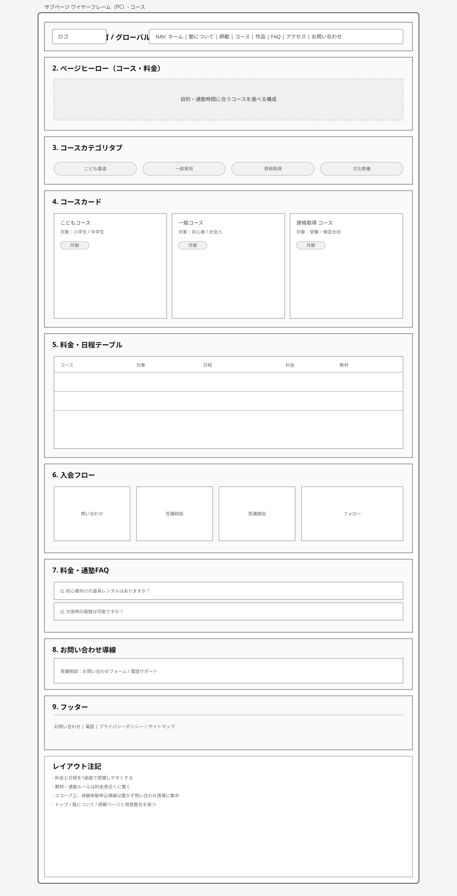
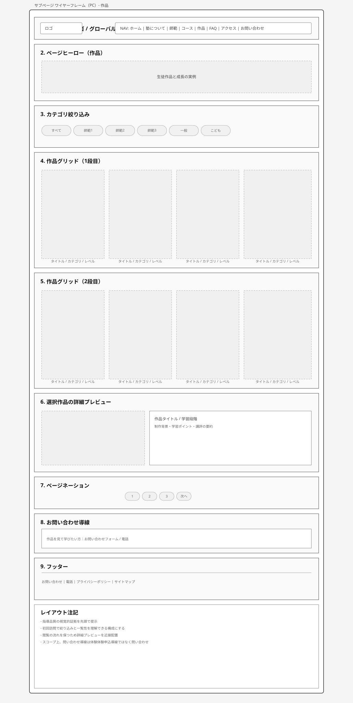
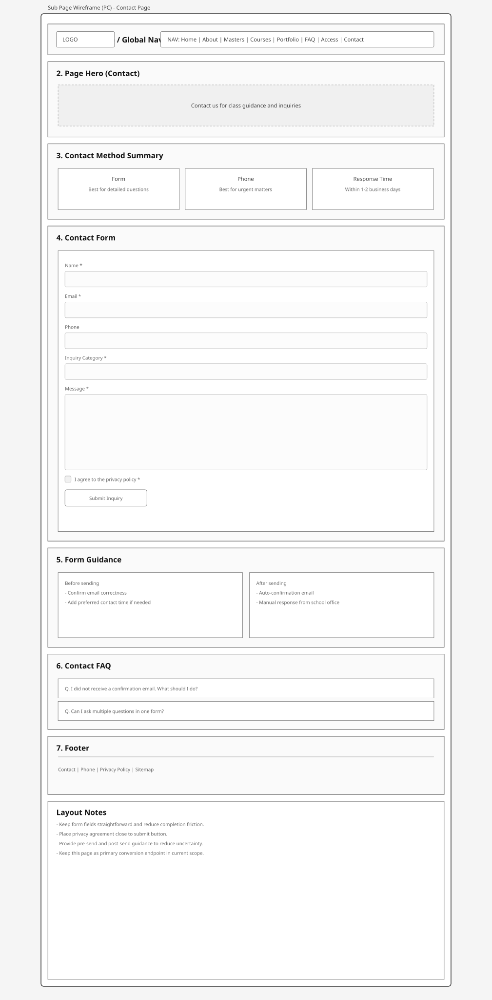
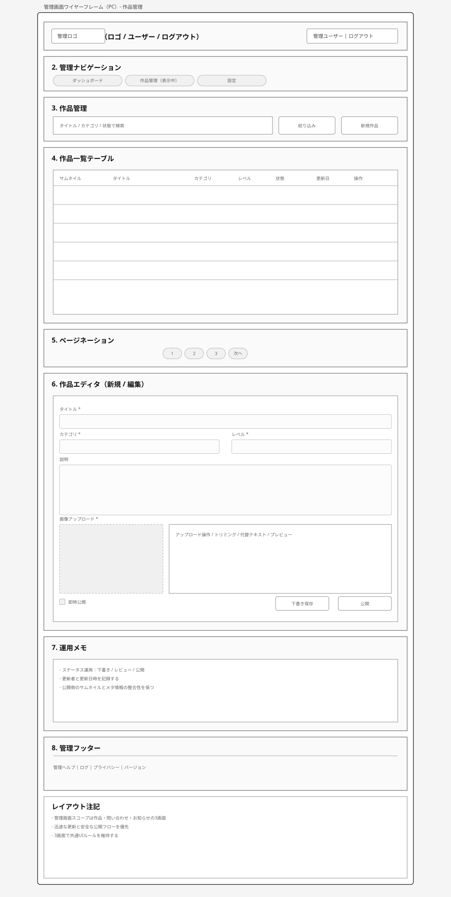
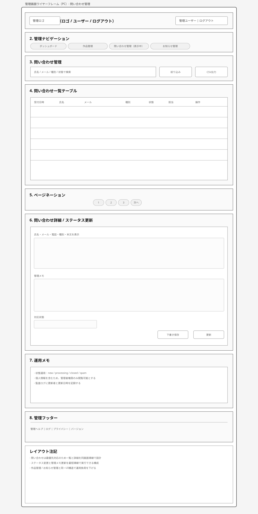
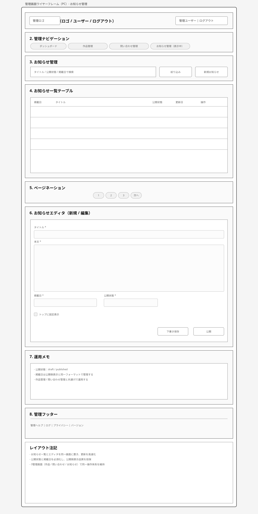
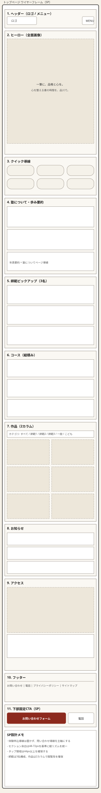

ワイヤーフレーム
ワイヤーフレーム作成方法
Top Pageデザイン参照先：https://maruoka-castle.jp/
構成は「印象形成 → 信頼形成 → 比較検討 → 問い合わせ」の順で設計する。
ファーストビューは全面画像とセンターキャッチコピーで塾の価値を明確に伝える。
中段で「塾の歩み」「師範」「作品」を並べ、上質感と実績を短時間で把握できる設計にする。
下段にアクセス情報と問い合わせ導線を配置し、来塾行動までの摩擦を減らす。
トップページ
想定セクション（上から順に配置）：
1. ヘッダー（ロゴ、グローバルナビ）
2. ヒーロー（全面image、センターにキャッチコピー）
3. 塾の歩み（年表または3カラムで沿革を要約）
4. 師範ピックアップ（3名程度のカード）
5. 作品ポートフォリオ（カテゴリ別サムネイル）
6. コース導線（子ども/大人/検定）
7. お知らせ（更新情報）
8. アクセス（地図要約、最寄駅、徒歩分数）
9. フッター（問い合わせ、電話、プライバシーポリシー）
画像参照パス：

ヒーロー直下に「塾の歩み」を置くことで、第一印象の直後に信頼情報へ接続し、離脱を抑える。
師範と作品を中段に配置し、教室のレベル感と人柄を同時に伝える。
コース導線は比較検討の起点として配置し、対象別に迷わず下層へ進めるようにする。
アクセス情報はCV直前の不安要素（場所が分かるか）を解消するため下段固定とする。
ヒーローは全面画像にセンターキャッチコピーのみを配置し、補助導線は設置しない。
下層ページ
【塾について】

配置意図：沿革を時系列で可視化し、理念と実績を1ページで理解できる構成にする。
【師範一覧】

配置意図：カード形式で得意分野を明示し、相性判断を短時間で行えるようにする。
【コース・料金】

配置意図：比較表を中心に配置し、意思決定に必要な情報（費用、時間、対象）を集約する。
【作品ポートフォリオ】

配置意図：カテゴリ絞り込みを上部に固定し、閲覧負荷を下げる。
【お問い合わせ】

配置意図：フォーム入力負荷を抑え、主要コンバージョン地点として離脱を減らす。
Webアプリケーション画面
対象画面：
・作品管理（新規登録、編集、公開設定）
・問い合わせ管理（一覧、詳細、状態更新、メモ）
・お知らせ管理（一覧、公開設定、掲載日管理）
画像参照パス：
現スコープ対象（管理画面）：作品管理 / 問い合わせ管理 / お知らせ管理



スマートフォン版
モバイル方針：
・ファーストビューは全面画像 + センターキャッチコピー（体験申込導線は設置しない）
・ナビゲーションはハンバーガー + 画面下部固定CTA（お問い合わせフォーム/電話）
・作品グリッドは2カラム、師範カードは縦積み表示
・フォームは1カラムで、入力途中離脱を防ぐため項目数を最小化
画像参照パス：

体験申込ページは現スコープ外。スマホ版もお問い合わせ導線中心で設計する。